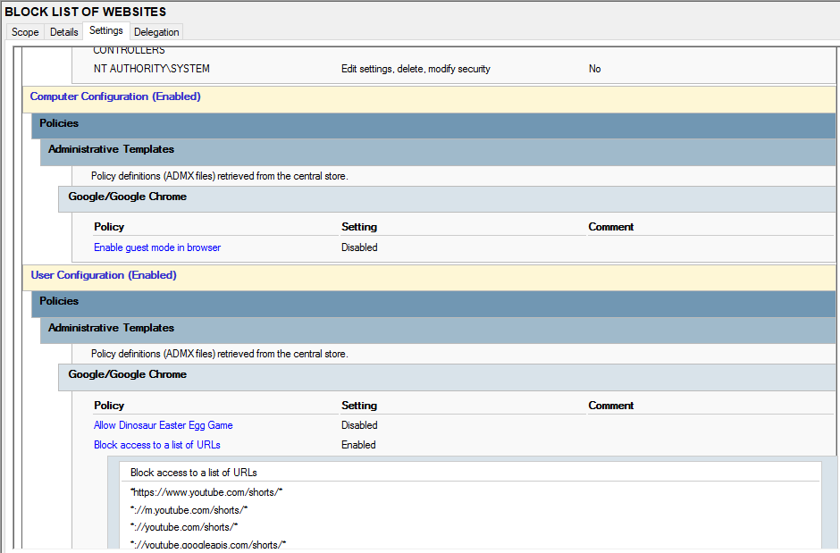
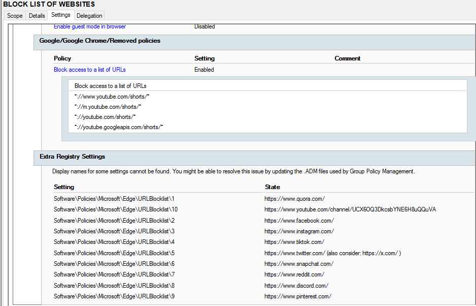

Block Restricted Websites Policy
Purpose
This policy blocks access to websites that are not allowed within the computer lab environment. It is used to enforce internet usage rules, improve productivity, and prevent access to inappropriate or distracting content.
How it works
The Group Policy restricts web access by applying URL or domain-level blocking rules. When a user attempts to access a restricted website, the browser denies the connection or redirects access to a blocked page.
How it is applied
- Open Group Policy Management Console (GPMC)
- Edit the User Configuration policy
- Navigate to: User Configuration → Policies → Windows Settings → Name Resolution Policy / Proxy / Chrome Policies
- Add blocked domains or URL restrictions
- Apply restriction list for lab environments
- Run
gpupdate /forceto apply changes
Commonly Blocked Categories
- Social media platforms
- Streaming websites
- Unauthorized downloads sites
- Non-educational browsing platforms
Screenshot
Website restriction policy applied in Active Directory:

